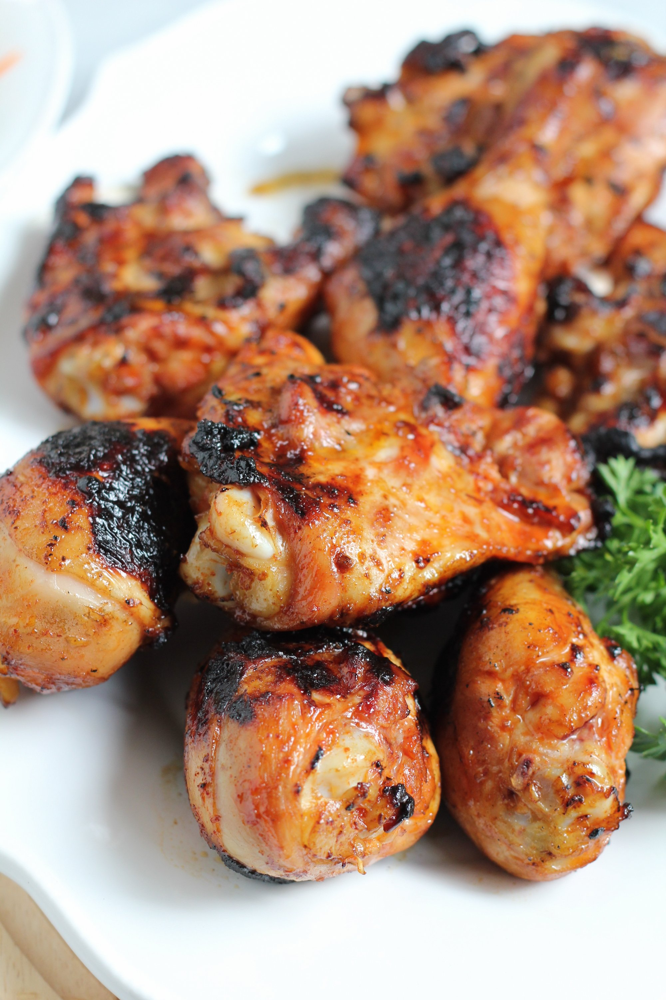

Best Steak

Description
This is an extremely simple and healthy korean chicken recipe. Perfect for college kids on a budget and nights where you feel a bit lazy. It's a marinade that works best with the grill, but you can use a pan as well. Enjoy!
Ingredients
- Chicken breast or thigh
- 3 tbsp Soy sauce
- 1 tbsp Lemon juice
- 3 tbsp Sugar or sugar replacement
- 1/4 tsp Pepper
- 1/4 tsp Ginger powder
- 1/4 tsp Onion powder
Steps
- Combine ingredients into tupper wear or plastic bag, mixing until dissolved. Place chicken inside marinade.
- Let chicken marinade for 20-30 minutes
- Place chicken on grill or pan and cook until crust forms and inside fully cooked
- Enjoy meal! Serve with rice or whatever sides you like